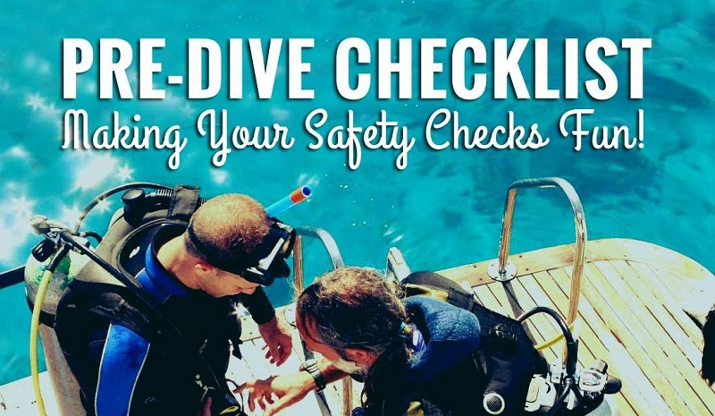

How to Safely do a Pre-Dive Check
A pre dive safety check is an important accident prevention procedure new divers learn during training. Unfortunately, it's one of the first things certified divers (choose to) forget. As divers gain more experience, the buddy check is often reduced to one diver asking the other, "you good?" One of the sayings from class was "Big White Rabbits Are Fuzzy." Can you identify the B-W-R-A-F in the below video?